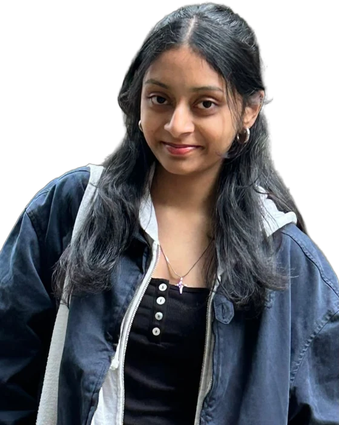

About Me
_□hi, my name is_
Anjali Gundawar
I build interactive tech with a strategic edge.
I am a full stack developer and business thinker focused on building creative digital projects and positioning them for real-world market success.
- 2nd year
- B.Tech in Computer Science & Business Systems
- Vellore Institute of Technology
